Monday, August 16th, 2004:
After all of the anticipation and a 2 hour flight and taxi ride I arrived behind the scenes at the BBA world championships. In a prelude to the following day's chaos, practice battles were held and Beyblades were inspected to lessen the next day's workload. I saw all of the national champions and their personal techniques and skill levels. It became obvious that some of them would have considerable trouble against the more skilled Beybladers.
At the official inspection worn and modificatied Beyblade components were discovered giving much frustration for players who had a single day to revamp their entire strategy. While this happened there were many friendly practice matches and much ogling of Kenta, the Japanese champ's collection. Generally there was a lot of technical talk among players and a frictionless camaraderie lacking competitive struggles between Beybladers… for now at least.
 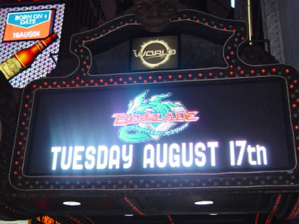
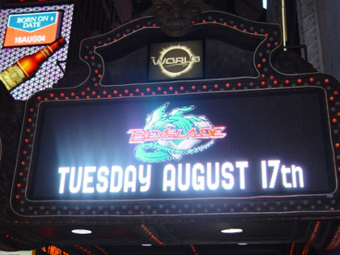
 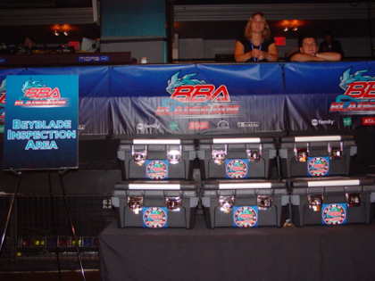
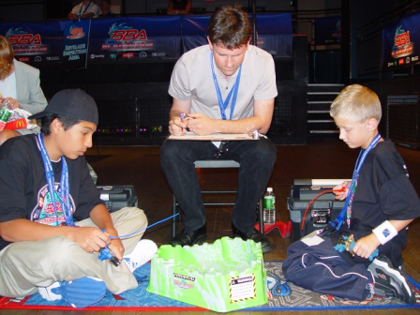
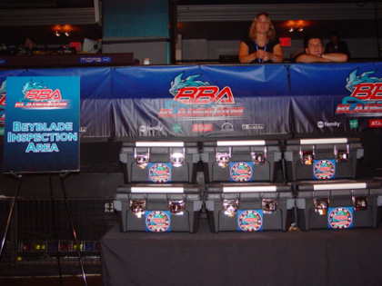
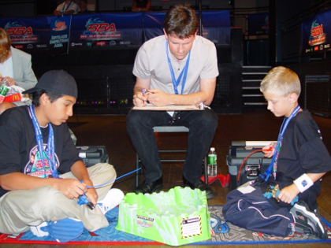


12:00pm EST
I arrived this morning to a cheering crowd awaiting the arrival of the national champions. To get everyone pumped us the Beyblade DJs engaged us in a cheer. As the white limousine pulled in, the crowd became wild as the champions climbed out the door and proceeded down the red carpet followed by, to everyone's surprise, the creator of Beyblade anime and manga himself, Takao Aoki!
After getting a quick bite to eat and some very sugary coffee I went to the green room to get a glimpse of the champions preparing for the day's tournament. The inspections where finishing up and some final rules were explained while the champions free battled and signed T-shirts. I could handle most of the champions in free battles although some were more skilled and difficult to beat. I could see nerves and tensions building as the tournament drew near.
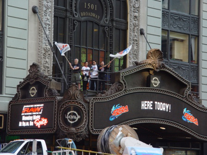
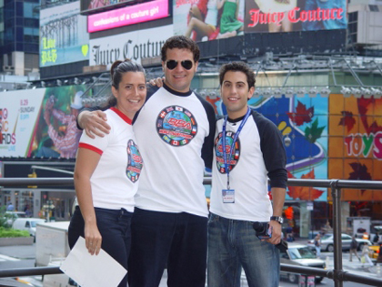
 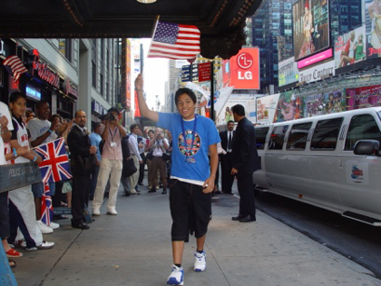
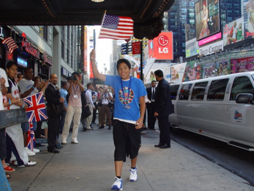
1:30pm EST
After I headed out of the green room I decided to look around. All of the standard tournament attractions were present, including the free battle area, tattoo parlor, video game station and new product booth. New to the tournaments was the Beyblade Million Dollar Super Spin booth, a game in which people who can make a Black Dranzer spin for an extremely long time get to enter a sweepstakes for a million dollars. Also new was the Build-A-Beyblade contest. With the tournament soon approaching I decided to see how everyone was doing backstage.


3:00pm EST
With the BBA World Championships underway it was easy to see who the top contenders were. Other champions dropped like flies to the might of Nolan, Kenta and Nathan's blades. Kenta was eliminated about halfway through the tournament due to his zombie Beyblade, a type of light, endurance focused, spin stealing blades with free spinning spin gears. Zombies had become incredibly popular in Japan due to their abilities to outlast opponents and steal spin. Their only weaknesses are light weight and the fact that they are easily K.O.ed. They work very well in Japanese Beystadiums due to their lack of penalty pockets. Kenta didn't know his free spinning zombie would spin out of control when it came into contact with the spinning center of the arena. The light Beyblade was tossed about and ran out of spin. The final 2 competitors were Nathan from the UK and Nolan for USA. Nolan dominated the final round because his defense type Beyblade survived the spinning disk and remained in control. In a salvo of confetti and cheering fans, Nolan was presented a large trophy and crowned Beyblade World Champion.


5:00pm EST
In the BBA Times Square Rumble tournament, I made it to the finals against Erick, the Mexican champ. Battling in the Beyultimate arena was difficult and Erick won because he had the stronger launch. In the grudge match the newly crowned BBA World Champion Nolan won with the provided Hard Metal System tops. The entire tournament was amazing. I met some awesome Bladers and had a great time.


 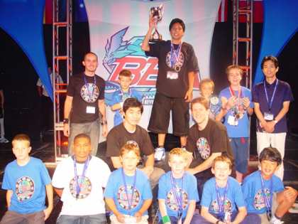
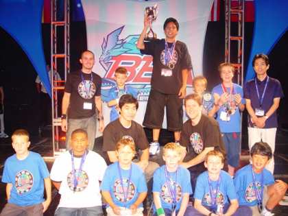
|
|
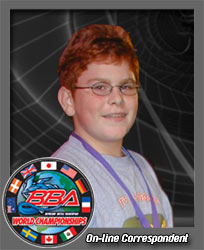 BBA:Who is Shawn?
BBA:Who is Shawn?
SHAWN: I am the BBA West Coast Champion and Official BBA World Championships On-line Correspondent.
BBA: So how did you get started in Beyblade?
SHAWN: I started Beyblading when I was twelve. My brother brought a Dragoon F home, and I was instantly hooked. My first Beyblade was a Metal Draciel, and I have been collecting ever since. I considered Beyblading competitively once I found out I could beat almost anyone at my school. I attended 3 Toys R Us Ripzone tournaments and I won the 3rd one. Later I flew off to Anaheim to compete in the BBA Blader Jam West Coast Championships. I actually won! My greatest challenge was when my Beyblade malfunctioned in the Official BBA Competition Beystadium in the semi finals. I corrected the problem and won. Later at the BBA North American Championships held at NASA Space Center Houston I learned that even with a lot of knowledge and experience, I couldn't win every time. Nolan, the North American Champion, was very skilled, especially with his launch techniques.
BBA: How did you get this cool job?
SHAWN: I am excited to be the Official BBA World Championships Online Correspondent. I can't wait to report the news straight from the World Competition! It's going to be incredible! I left the BBA North American Championships in Houston with 2nd place and thought my Beyblading career was over until I heard about the BBA Times Square Rumble to be held at the BBA World Championships in New York. I hope to fix all of my past battle errors and win the tournament. I also hope Nolan represents our country well in the BBA World Championships. I will be cheering him on. As for my strategy, I won't be revealing anything just yet. All I have to say is I am proficient using all types of Beyblades so I can effectively exploit my opponent's weaknesses.
BBA: Anything else?
SHAWN: If you can't make it to the Beyblade Battle Zone in Times Square for the BBA World Championships on August 17th don't forget to check out my Official Event Diary at www.beyblade.com. I'll cover all the latest news from the world of Beyblade, plus you'll be the first to know who is crowned the Beyblade World Champion. I'll also let you know how the BBA Times Square Rumble shapes up. See you in New York!
|
|